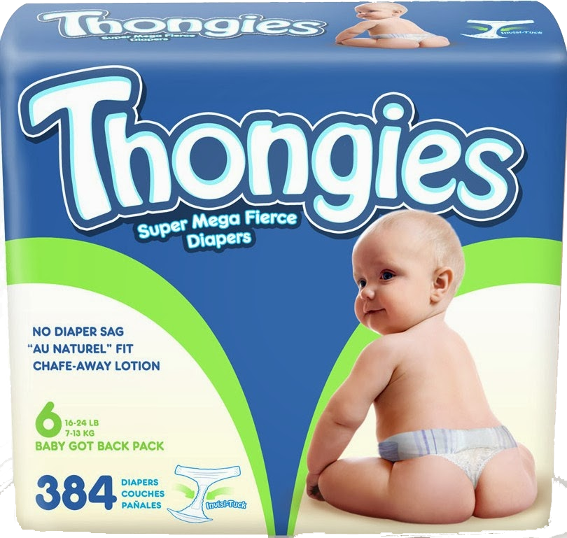
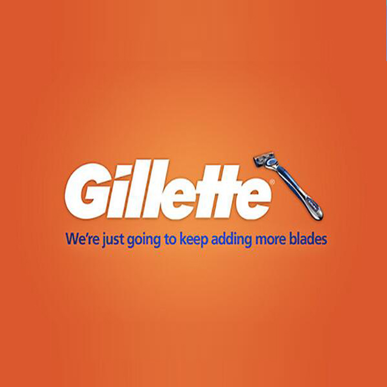
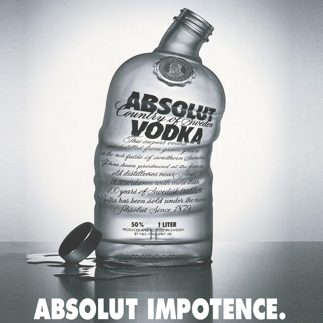

Adult Education
YOUR greatest achievements occurred during childhood. But strangely none of them are highly valued in adult life. Weep as you remember the pointless effort you put into these.
Bronze survival
Weeks spent diving for rubber bricks and towing a 'drowning' child to safety. Since then you've had no chance to use these skills. Really you should be allowed to push someone into a canal just to save them. Although there's a danger you could only do it in a completely calm, heated swimming pool and it might turn into murder.
Cycling proficiency
Basically more work after school studying the highway code and living in terror of not being in exactly the right position for a right turn as you made a hand signal like a wanker. Later you discovered anyone can cycle on the road without a test. Everything you believed was a lie, and you've - rightly - never trusted another human being ever since.Being good at football
The Action Man and Star Wars ranges had tokens for more toys. It was incredible when your 'free' thing arrived a mere six weeks later, after your mum paid a fortune in postage. So 35 years later, do you own priceless rare figures that would buy you a house? Nope. You've got the Rancor Keeper from Return of the Jedi, basically a fat, shirtless man in what appears to be a nappy.Computer game expertise
You excelled at Spectrum or Commodore games, not from natural aptitude but spending a psychopathic amount of time hammering away repetitively at Manic Miner or Elite. Fat lot of good it did you. You're not even a games tester, much less a real space pilot. It's almost as if The Last Starfighter was deliberately designed to tap into young boys' fantasies. The cynicism is disgusting.Winning a competition
Not Young Musician of the Year, obviously. More likely making a hat for your primary school Christmas party and winning first prize of a Toblerone. But you'd never recreate that raw adrenalin rush of success, and since then your life has been a series of miserable failures like an attractive partner, terrific kids and a really good job.



